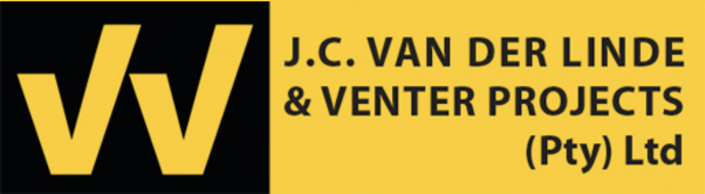
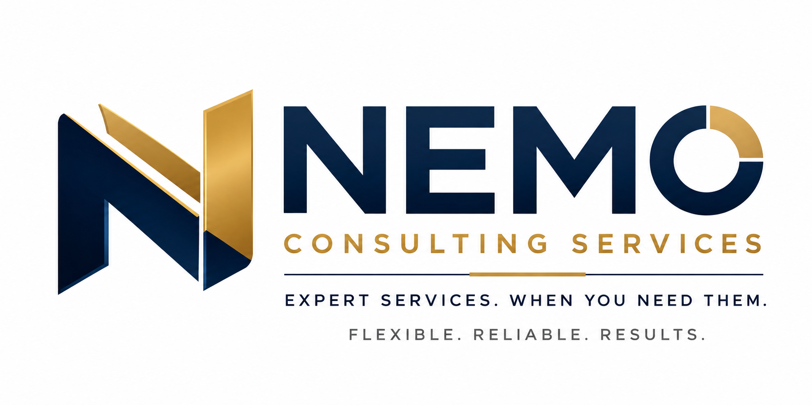
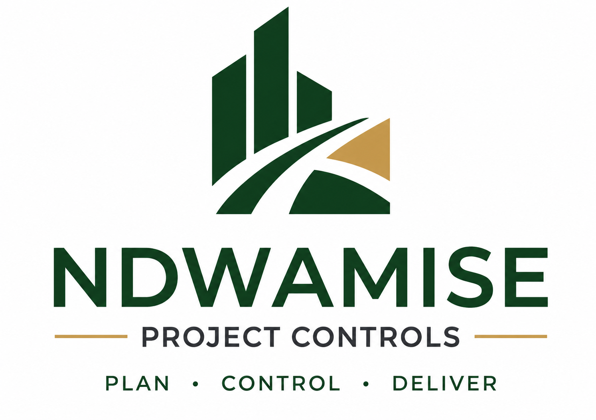

Speco Group designs and deploys intelligent automation systems for high-stakes industries — from document pipelines to enterprise workflow orchestration.
Precision systems for every high-stakes operation.
We build bespoke digital infrastructure and automation tools that eliminate inefficiency, enforce compliance, and deliver measurable commercial performance — regardless of industry.
01
Workflow Process Mapping & Automation
End-to-end operational workflow analysis, bottleneck identification, and automated process design that turns complex multi-step operations into frictionless pipelines.
02
Intelligent Document Routing
AI-powered document lifecycle management, automated approval chains, and real-time routing pipelines — the technology behind DocuFlow Pro, deployed for your organisation.
03
Custom Systems Integration
Bridging disparate platforms, ERPs, and field tools into unified operational ecosystems. We connect the silos that are costing your business time and accuracy.
04
Data Intelligence & Reporting Dashboards
Custom-built operational dashboards that surface critical KPIs in real time — giving leadership decisive visibility over performance, compliance, and risk.
05
Compliance & Regulatory Automation
Automated compliance tracking, audit-ready documentation, and regulatory filing systems that eliminate the manual overhead of operating in tightly governed industries.
06
Enterprise Training & Enablement
Structured knowledge transfer, digital tool onboarding, and enablement programmes that ensure your team operates the systems — not the other way around.
Speco Group Technology
DocuFlow Pro — Intelligent Document Orchestration
Our flagship SaaS platform eliminates document chaos in high-stakes environments. Built for organisations where a misfiled document or missed routing step has real commercial consequences.
✓Real-time document queuing — live visual tracking of every document in your pipeline, with priority routing and auto-escalation.
✓Intelligent routing metrics — algorithmic assignment based on workload, expertise, and deadline proximity across teams.
✓Audit-ready compliance logs — immutable, timestamped document trails that satisfy the most rigorous regulatory requirements.
✓Cross-industry deployment — built for Legal, Finance, Logistics, and Operations teams with environment-specific configuration.
Your industry. Your inefficiencies. Our tailored fix.
Select your sector to see the specific operational bottlenecks we solve — and the precision systems we deploy to solve them.
Industry Bottlenecks
Manual shipment documentation creating delays at every handoff point
Cross-border compliance paperwork lost in email chains and folders
Supplier onboarding bottlenecks slowing new route activations by weeks
No real-time visibility on document status across freight partners
Speco Group Solutions
DocuFlow Pro automated routing eliminates manual handoff friction entirely
Compliance document generation and cross-border packet assembly in minutes
Digital supplier onboarding portals with automated verification workflows
Live shipment documentation dashboards with multi-party visibility
Industry Bottlenecks
Document version control chaos across matters with multiple contributors
Critical deadlines missed due to manual diarising and calendar silos
Contract review backlogs creating billing and relationship risk
Client reporting built manually from disparate systems every month
Speco Group Solutions
Automated contract lifecycle management with version-controlled document trees
Deadline tracking and escalation system with cascading notification logic
AI-assisted clause routing that accelerates contract review by up to 60%
Automated client portal reporting generated directly from matter data
Industry Bottlenecks
Regulatory filing delays due to manual preparation and sign-off processes
Audit trail gaps creating exposure during regulatory reviews
Manual reconciliation consuming analyst capacity that should drive value
Client onboarding friction from fragmented KYC documentation workflows
Speco Group Solutions
Automated compliance filing pipelines with multi-approver sign-off chains
Immutable, timestamped audit logs that satisfy FSCA and SARB requirements
Automated reconciliation pipelines freeing analysts for high-value work
Digital KYC and FICA workflow automation reducing onboarding time by 70%
Industry Bottlenecks
Siloed team communication generating duplicated effort and misalignment
Process bottlenecks invisible until they cause missed SLAs and client escalations
Reporting inconsistency across departments making leadership decisions data-poor
Manual task allocation based on availability rather than capacity or expertise
Speco Group Solutions
Unified workflow orchestration hubs connecting all operational teams in one system
Real-time bottleneck detection dashboards with pre-SLA breach alerting
Standardised cross-departmental reporting templates auto-populated from live data
Intelligent task routing engine that assigns work based on capacity and skill-match
Industry Bottlenecks
Regulatory inspection backlogs caused by manual scheduling and paper-based records
Field-to-office reporting lag creating hours-old data for control room decisions
Asset management gaps where maintenance records live in disconnected spreadsheets
Incident documentation inconsistency creating regulatory and liability exposure
Speco Group Solutions
Digital inspection workflow management with automated regulatory scheduling
Mobile-to-cloud field data pipelines delivering real-time operational telemetry
Unified asset lifecycle tracking linked to maintenance calendars and compliance records
Standardised incident reporting system with automatic escalation and regulatory notification
Credibility
Trusted by Industry Leaders
Built on Tier-1 project experience. Deployed across high-stakes operational environments.
Partners & Clients

◆
◆
◆
◆
◆
◆

◆

◆
◆
◆
◆
◆
◆
◆
◆
◆
Note: The companies and frameworks mentioned above represent high-caliber operational ecosystems that inform our structural knowledge, compliance standards, and industry methodologies. While several represent active clients and projects we have directly optimized, others comprise the professional foundation of Speco Group's executive-level experience.
"Speco Group's systems bridged the gap between our field operations and commercial oversight. The automation tools are precise, and the gains in efficiency were immediate and measurable."
— Commercial Director, Tier-1 Contractor
"The workflow orchestration platform deployed by Speco has drastically reduced our administrative burden and given our leadership team a level of operational visibility we've never had before."
— Managing Director, Civil Engineering Firm
Who We Serve
Built for operators in high-stakes environments.
Our clients share one thing in common: they cannot afford operational failure. We build the systems that make sure they never have to.
Logistics & Supply Chain
Freight operators, 3PLs, and customs brokers needing end-to-end document automation and shipment tracking pipelines.
Legal Firms & Practices
Attorneys, commercial law firms, and legal departments requiring contract lifecycle management and deadline automation.
Financial Services
Banks, asset managers, and insurers where regulatory compliance, KYC automation, and audit trail integrity are non-negotiable.
Operations & Enterprise
Large-scale operational teams needing unified workflow orchestration, bottleneck elimination, and standardised reporting.
Utilities & Infrastructure
Regulated service providers requiring inspection management, field data pipelines, and asset lifecycle automation.
Government & Parastatals
Public sector entities requiring procurement tracking, regulatory compliance systems, and citizen-facing process automation.
Live Tools
Deployed Systems in Action
Our tools are not theoretical — they are live and operating on active projects right now.
AI Contract Assistant
VDLV JBCC Protocol
A deployed intelligent chatbot assisting legal and construction professionals with contract clause interpretation and compliance guidance.